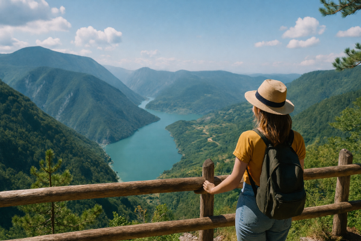

Would you like to travel to Serbia as a tourist? Here you will find all the important information you need for an unforgettable stay.
With a rich history, vibrant culture, and diverse landscapes, Serbia combines the charm of historic cities with untouched natural beauty. From the lively nightlife of Belgrade to peaceful monasteries, mountains, lakes, and national parks, travelers can experience both adventure and relaxation in one trip.


A fascinating mosaic of Roman, Byzantine, and Ottoman influences, visible in majestic medieval monasteries and formidable fortresses like Kalemegdan and Petrovaradin.
From the mighty Danube and the breathtaking Iron Gate gorge to the rugged peaks of Kopaonik and Tara National Park, explore Europe's hidden natural gems.
Whether it's the vibrant nightlife of Belgrade, traditional ethno-villages, or wellness retreats in famous thermal spas (Banjas), Serbia offers a unique blend of old and new.